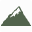
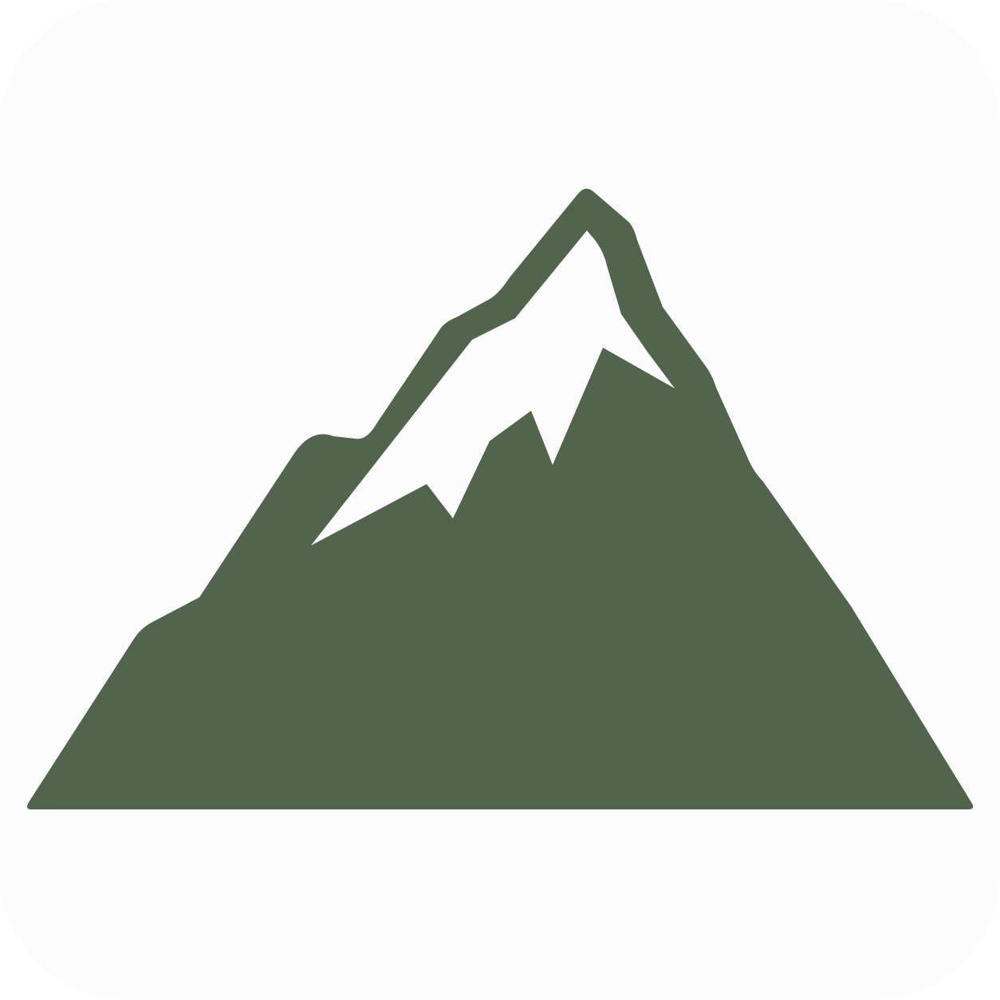

Mountain favicon
The scalable SVG at actual tab sizes, plus the 32px PNG fallback on high-density tabs. Green #52644d, off-white #fcfcfc, transparent outer corners.
Light browser tabs
 Kevin Wang · About
Kevin Wang · About
Retina / high-density tab
16px24px32px48px64px128pxDark browser tabs
Kevin Wang · AboutRetina / high-density tab 16px24px32px48px64px128px